EPISODE 04
ECPE C2 · GRAMMAR MISSION
PASSIVE VOICE & CAUSATIVE
Learn the rule. Decode the structure. Master the exceptions. Complete all five grammar parts, five checkpoints and two ECPE-style reviews.
5 grammar parts · 27 checkpoint questions · 31 review questions
FINAL CHALLENGE
Two ECPE C2 Reviews
Based on the two Practice pages supplied. Select an answer for each question, then check your score and explanations.